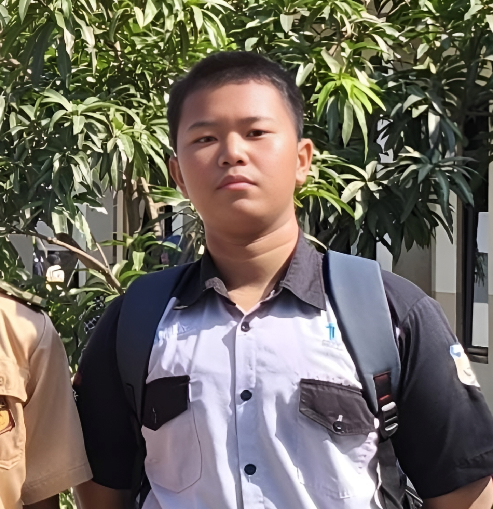

Satrya Yanuar Wiguna
Pelajar | XI TJKT 2
Data Pribadi
Nama: Satrya Yanuar Wiguna
Tempat, Tanggal Lahir:
Majalengka, 07 Januari 2010
Agama: Islam
Kelas: XI TJKT 2
Alamat:
Desa Sepat, Kec. Sumberjaya, Kab. Majalengka
Hobi/Keahlian: Gamers, Bermain Badminton-Voly-Basket, Bersepeda, Editor,dan Programer.
Riwayat Pendidikan
SMK Negeri 1 Leuwimunding:
2025–Sekarang
SMP Negeri 3 Leuwimunding:
2022–2025
SD Negeri Sepat:
2016–2022